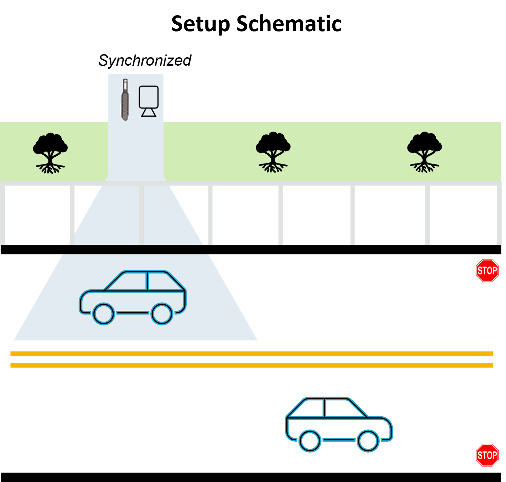

|  |
|---|
| Figure 1. 2021 ML PhD job hunt took 10 weeks and 137 hours |
{kind=link}
 |
|---|
| Figure 2. Another table content here |
The success of deep-learning solutions in real-world applications is highly related to the quality of data in performing the tasks they are designed for. When it comes to training and evaluating deep-learning systems, acquiring varied and large quantities of labeled data is necessary to train the system effectively, and evaluate its performance under a variety of conditions. Manual data labeling is extremely time consuming, leading to either large expenses or limited datasets.
When automated collection of ground-truth data is feasible, it can largely reduce the amount of effort required to generate a varied and consistent dataset. However, automated ground truth collection comes at a cost in terms of precision, and multiple automatic systems are employed to collect ground-truth data about the same phenomenon, each producing slightly different results.
At the same time, making sense of sounds is one of the growing topics in the Artificial Intelligence (AI) community. In several AI pipelines, specifically deep-learning-based ones, having access to large amount of labeled data is key to successfully tackle the task at hand. However, audio data collection and annotation are much more challenging compared to other domains such as vision, text etc.
In this work, I utilize an audio-video data collection and labeling scheme to overcome some of these challenges, while also designing and implementing a novel classification model to differentiate Electric Vehicles (EV’s) from non-electric vehicle pass-bys, also commonly referred to as Internal Combustion Vehicles (ICE). I propose a tandem camera and microphone array data collection setup and deploy the advancements in the vision domain to automatically label the moving sources appearing in the video. This proposed setup can be expanded to combination of microphone array and other sensors that would provide automatic labeling for moving sound sources.
 |
|---|
| Figure 1. 2021 ML PhD job hunt took 10 weeks and 137 hours |
My 10 week journey took 137 hours and culminated in 7 on-site interviews with Apple, Microsoft, Cloudflare, Mandiant, Stripe, Tinder and GE Labs,
leading to offers from all but Stripe. Plus one additional offer from Amazon based on a summer internship. I was rejected from 6 teams (mostly due to Leetcode screens), never heard back from 5, and withdrew from 18 due to poor fit, no remote work, or not enough time. Figure 1 summarizes my job hunt journey with each company, along with the outcome.